Sjorringen en hun gebruik
Sjorringen worden gebruikt om palen met behulp van een touw aan elkaar vast te maken. Er zijn verschillende soorten sjorringen, die elk voor een bepaald doel worden gebruikt. Het is belangrijk dat je weet welke sjorring je moet gebruiken, omdat anders de verbinding niet zo stevig is als je zou denken en daardoor onbetrouwbaar kan zijn.
Als je een sjorring gaat maken, moet je ervoor zorgen dat de sjorring netjes wordt uitgevoerd en dat elke slag in de sjorring wordt aangetrokken. Door deze manier van werken krijg je een sterke sjorring die de palen goed vasthoudt en betrouwbaar is. Eerst sla je het touw een aantal malen om de paal heen. Elke slag trek je goed aan. Vervolgens ga je woelen. Door te woelen trek je alles nog eens stevig aan. zodat de sjorring goed vast komt te zitten.
Een sjorring kun je het beste met twee personen maken. De ene houdt in het begin de twee palen op z'n plaats. De ander maakt met het touw de sjorring. Als er gewoeld gaat worden, zorgt de ene persoon er voor dat de woeling strak aangetrokken blijft, terwijl de ander de volgende woeling legt.
Besteed tijd aan het maken van een sjorring. Het is handig als je snel een sjorring kunt leggen, maar je hebt er niets aan als de sjorring even later al weer los blijkt te zitten. Leg de slagen nauwkeurig om de palen en trek ze steeds aan. Een net uitgevoerde sjorring is veel sterker dan een slordig uitgevoerde sjorring. Werk een sjorring netjes af.
1. Kruissjorring
De kruissjorring wordt veel toegepast. Een kruissjorring wordt gebruikt om twee palen aan elkaar vast te maken die niet meer van stand hoeven te veranderen. Je kunt deze sjorring ook gebruiken, als de palen niet loodrecht op elkaar staan. De kruissjorring is uitstekend geschikt voor het maken van dwarsverbindingen en kan veel kracht verwerken, als hij tenminste goed wordt uitgevoerd.
Je begint de kruissjorring met een mastworp met voorslag of een constrictorknoop. Komt de druk op de horizontale paal van boven, dan komt de worp of knoop net onder de horizontale paal om de verticale paal te zitten. Komt de druk van onder, dan ligt de worp of knoop net boven de horizontale paal. Je slaat het touw drie keer om de palen. Bij de horizontale balk komen de slagen binnen elkaar en bij de verticale paal buiten elkaar te liggen. Daarna ga je woelen. Je slaat het touw tussen de palen door om de slagen heen. Deze woeling trek je weer strak aan. Je maakt 2 of 3 woelingen afhankelijk van hoeveel ruimte er is. De woelingen moeten netjes naast elkaar liggen en dus niet elkaar afknellen. Tot slot werk je de sjorring af met 3 halve steken die je terugtrekt, zodat ze niet kunnen verschuiven.
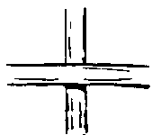
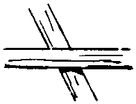
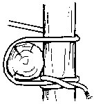
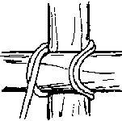
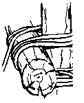
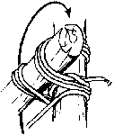
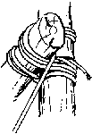
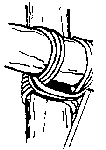
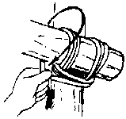
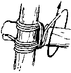
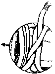
2. Filippijnse Diagonaalsjorring
A lashing used in lightweight construction work. Start with the middle of the rope, tucking the running ends through the middle 'loop' after going round both spars. Use the 'loop' to pull the spars together. Now proceed as for a diagonal lashing taking the running end round both spars, keeping both ends together. Separate the ends and take frapping turns between the spars, pulling the rope tight as you do so.
Complete the frapping turns and finish off with a square knot.
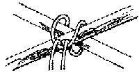
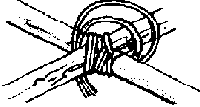
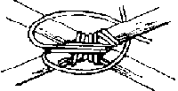
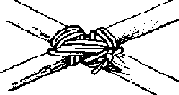
3. Japanse Kruissjorring
A lashing used in lightweight construction work Sheer lashing The sheer lashing is a simple lashing. This lashing is used to connect 2 spars that will open like a sheer. One starts with a constrictor knot around one of the two spars. Then you go round about 7 times. Then you do some frappings and end with a clove hitch or 3 half hitches.
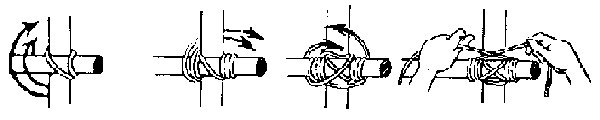
4. Vorksjorring
De vorksjorring is een van de eenvoudigste sjorringen. Deze sjorring wordt gebruikt om twee palen met elkaar te verbinden die later in een vork komen te staan. Vandaar de naam. Je begint de vorksjorring met een mastworp met voorslag of een constrictorknoop om een van de twee palen. Daarna maak je ongeveer 7 slagen om de beide palen heen. Zorg ervoor dat de slagen tegen elkaar liggen. De vorksjorring moet een beetje kunnen scharnieren. Te veel slagen kunnen lastig zijn. Na het leggen van de slagen maak je een aantal woelingen. Tot slot eindig je met een mastworp of 3 halve steken om de andere paal en aan de andere kant dan waar de eerste mastworp ligt.
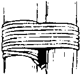
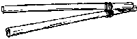
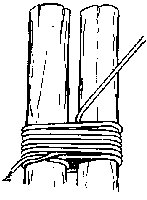
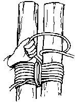
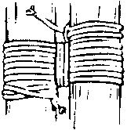
5. Achtvormige sjorring
De achtvormige sjorring wordt gebruikt om drie of vier palen met elkaar te verbinden, die later een drie- of vierpoot zullen gaan vormen. De naam dankt deze sjorring aan zijn uiterlijk; hij lijkt veel op een 8. Voordat je gaat beginnen, leg je de palen naast elkaar en je zorgt ervoor dat de onderkanten van de palen op gelijke hoogte liggen. Het is handig om een hulppaaltje onder de palen te leggen, zodat je meer ruimte hebt om de sjorring te maken. Je begint weer met een mastworp met voorslag of een constrictorknoop om een van de buitenste palen. Vervolgens sla je het touw afwisselend over en onder de palen door; net zoals je in een vlecht doet. Daarna leg je tussen elke twee palen een aantal woelingen. Je eindigt met een mastworp om de andere buitenste paal.
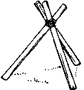
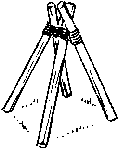
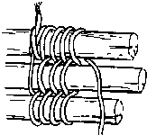
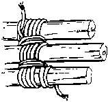
6. Diagonaalsjorring
De diagonaalsjorring kun je gebruiken om twee palen die elkaar kruisen, maar elkaar niet raken, tegen elkaar te trekken en te verbinden. Als de palen elkaar wel raken kun je beter een kruissjorring gebruiken. Een typische toepassing zie je in het volgende plaatje. Je begint met een timmersteek om beide palen heen. Trek de timmersteek aan tot de palen elkaar raken. Daarna sla je het touw een aantal malen om de palen heen zoals is aangegeven in de tekeningen. Drie slagen zijn meestal voldoende. Tot slot maak je enkele woelingen en leg je een mastworp of 3 halve steken om een van de palen om de sjorring af te maken.
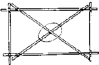
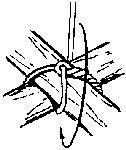
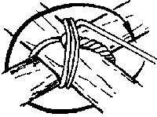
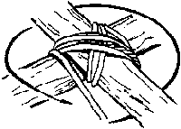
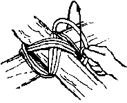
7. Steigersjorring
De steigersjorring wordt gebruikt om palen die in elkaars verlengde liggen met elkaar te verbinden. Zo'n verbinding bestaat uit twee steigersjorringen, die minstens een meter uit elkaar liggen. Bij elk uiteinde van de paal ligt een steigersjorring. Je begint met een mastworp in het midden van het touw om de twee palen heen te maken. Daarna sla je beide uiteinden van het touw tegengesteld om de palen heen. Aan de ene kant komen de slagen netjes naast elkaar te liggen, aan de andere kant kruisen ze elkaar. De uiteinden van het touw maak je aan elkaar vast met een platte knoop. Hetzelfde doe je met de steigersjorring aan de andere kant. Als de twee sjorringen zijn gelegd, sla je aan beide kanten een wig tussen palen. Door de wiggen komen de sjorringen goed vast te zitten. Je ziet dat er geen woelingen worden gemaakt. De wiggen nemen de taak van de woelingen over, zij worden altijd van boven af, zo nodig aan beide kanten, in de sjorring geslagen, dit is omdat volgens ene Newton appels anders uit bomen vallen.Een steigersjorring is moeilijk goed te maken. Vaak zal de sjorring zich loswerken door de krachten die er op komen te staan. Als het even kan, moet je het verlengen van palen zien te voorkomen door bijvoorbeeld langere palen te nemen. Gebruik je toch steigersjorringen, controleer dan regelmatig of de wiggen nog strak tussen de palen zitten en tik ze zo nodig vast.
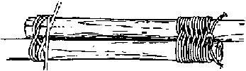
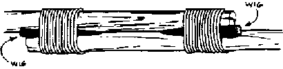
8. Woelsjorring
Dit is eigenlijk geen echte sjorring, maar een variant op de vorksjorring. Je gebruikt hem als twee palen erg scheef op elkaar staan. Je begint met een timmersteek om beide palen, daarna maak je ongeveer 10 slagen en eindigt met een mastworp of 3 halve steken, sla een paar wiggen tussen de slagen en klaar is Meneer Kees.